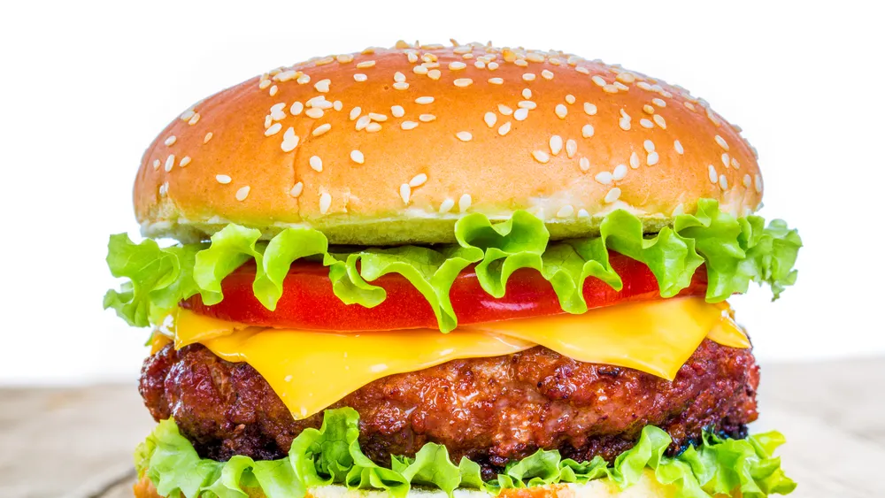

Hamburger Recipe

The Ultimate Hamburger
For historic continuity, ferociously loyal community support, and an atmosphere that you could spread with a knife, you can't beat the hamburger joint Louis' Lunch, in New Haven, Connecticut.
Since 1898, the Lassen family has been grinding its own beef daily, hand shaping patties to order, and grilling burgers on antique cast-iron broilers in front of live flames.
(This answers the question once and for all — the proper way to cook a hamburger is by grilling, not by frying it on a griddle.)
And as any regional
American culinary landmark should be, Louis' Lunch is sufficiently quirky to allow melted processed cheese but militantly prohibit ketchup and mustard as accompaniments to its signature burgers.
Here, then, is the next best thing to elbowing your way up to the counter at Louis'.
Ingredients
- 1 1/4 pounds ground chuck
- 1 1/4 pounds ground sirloin
- Coarse salt (Kosher or sea)
- Freshly ground black pepper
- 1/2 medium sized onion cut into 8 thin wedges
- 16 slices of sandwich bread
- 3 tablespoons of melted butter
- 1 large or 2 medium sized red tomatoes cut into thin slices
- 8 boston or romaine lettuce leaves
- Cheese sauce
Steps
- Set up the grill for direct grilling
- Place the chuck and sirloin in a large mixing bowl and mix with a wooden spoon, or mix the meat in a stand mixer fitted with a dough hook.
If possible, avoid mixing the meat with your hands so your fingers don't warm it.
- Wet your hands with cold water and divide the meat into 8 equal portions. Working quickly and with a light touch, pat each portion into a 1/2-inch-thick squarish patty. Generously season each patty on both sides with salt and pepper.
Press an onion wedge into one side of each patty so that it's flush with the meat.
- Lightly brush the bread slices with the butter, if using. Arrange the tomatoes and lettuce leaves on an attractive serving platter.
- When ready to cook, brush and oil the grill grate. Place the burgers on the hot grate, onion side down. Grill the burgers until cooked to taste, 3 to 4 minutes per side for medium-rare. To test for doneness, insert an instant-read meat thermometer through the side of a burger into the center.
The internal temperature should be about 145°F for medium-rare or, if using commercial ground beef, cook it to at least medium, 160°F.
- Meanwhile, place the bread slices on the hot grate and grill until lightly toasted, 1 to 2 minutes per side.
- To serve, place a lettuce leaf on top of a slice of toast. Top with a burger, tomato slice, and Cheese Sauce , if using. Slap a piece of toast on top and serve at once.
Homepage